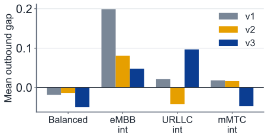
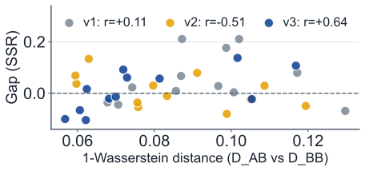
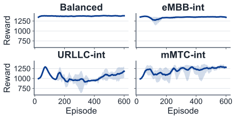

1Problem & approach
5G shares one radio cell between services with incompatible needs: eMBB wants throughput, URLLC wants low delay, mMTC wants to absorb many tiny reports.
A scheduler splits 50 Physical Resource Blocks (PRBs) between these slices every millisecond. Reinforcement learning (RL) can learn this, but a learned policy is tied to the traffic it saw in training.
Gap in the literature: a penalty for traffic change is assumed, never quantified. We built a simulator, trained Deep Q-Network (DQN) agents and measured it.
2The RAN slicing simulator
3Four load-matched environments
All four offer 48 of 50 PRB/step (96 % utilisation); only the mix differs, so a measured gap can be blamed on traffic mix alone.
| Environment | Offered load (PRB/step) |
|---|---|
| Balanced | 161616 |
| eMBB-int | 241212 |
| URLLC-int | 122412 |
| mMTC-int | 121224 |
eMBB URLLC mMTC (the chart colours used throughout).
- Arrival rates are derived from the load target, not tuned.
- SLA thresholds and observation scaling are global: otherwise “SSR” would mean different things per environment.
- The three intensive mixes sit at equal distance from balanced.
4Reward: justified, not blind
- SSR = SLA satisfaction ratio (0–1) per slice; equal slice weights, since any other weighting is an unjustified priority claim.
- Rejected: weighted SE + SSR sums, which can “blindly sacrifice SLA” for efficiency (see survey [1]).
- SSR × SE is not computable here: with no channel model, spectrum efficiency is constant and the product collapses to SSR.
- Backlog term (q̂): credit assignment only. mMTC’s long-timescale KPI gives almost no gradient otherwise. The weight 0.1 was not swept.
5Transfer protocol
6RL vs. heuristics

7Transfer-gap matrix

8Gap vs. training noise

9Who transfers best?

10Distance does not predict gap

11Training is unstable

12Lessons, limits & next steps
- Absolute SLA thresholds break load-matched studies. A 10 PRB/step eMBB floor never scaled with eMBB load: a random policy scored 1456/1500 in eMBB-int. A demand-relative 90 % served ratio fixed the ordering.
- Greedy evaluation exposes fragile policies. When a KPI integrates over time (mMTC buffer), exploration noise drains the queue during training. Greedy mMTC SSR fell to 0.45 despite near-identical training reward.
Limits: single cell, no channel or mobility, constant total load, DQN only, unswept hyperparameters, only 12 pairs.
Next: PPO/A2C, Double DQN, ≥10 seeds, varying load and mobility, fine-tuning to close the gap.
13Conclusions
- Wrong-mix deployment costs about 0.05–0.08 SSR on average, which is comparable to seed noise.
- Train on representative, balanced traffic instead of keeping a library of scenario-specific policies.
- Control training variance before investing in per-scenario retraining.
- [1] Zangooei et al., RL for RRM in RAN Slicing: A Survey, 2022.
- [2] Abiko et al., Flexible resource block allocation to slices, IEEE Access, 2020.
- [3] Mnih et al., Human-level control through deep RL, Nature, 2015.
14Contributions
Mark Zhao
[what Mark built / analysed]
[Partner name]
[what the partner built / analysed]